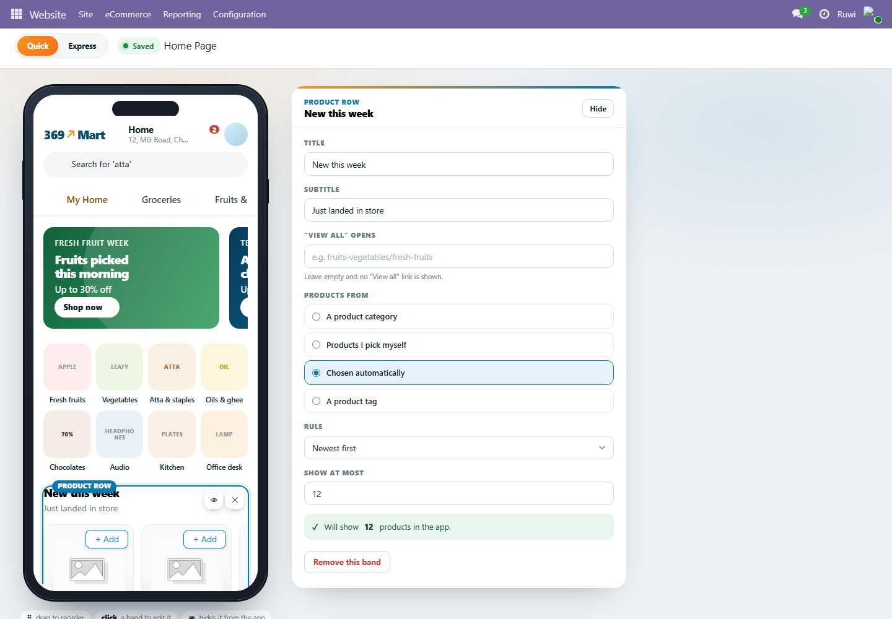
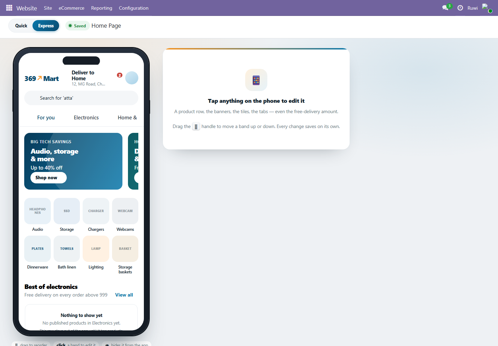
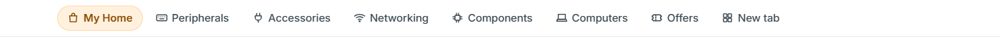
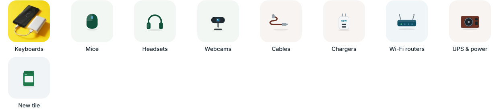
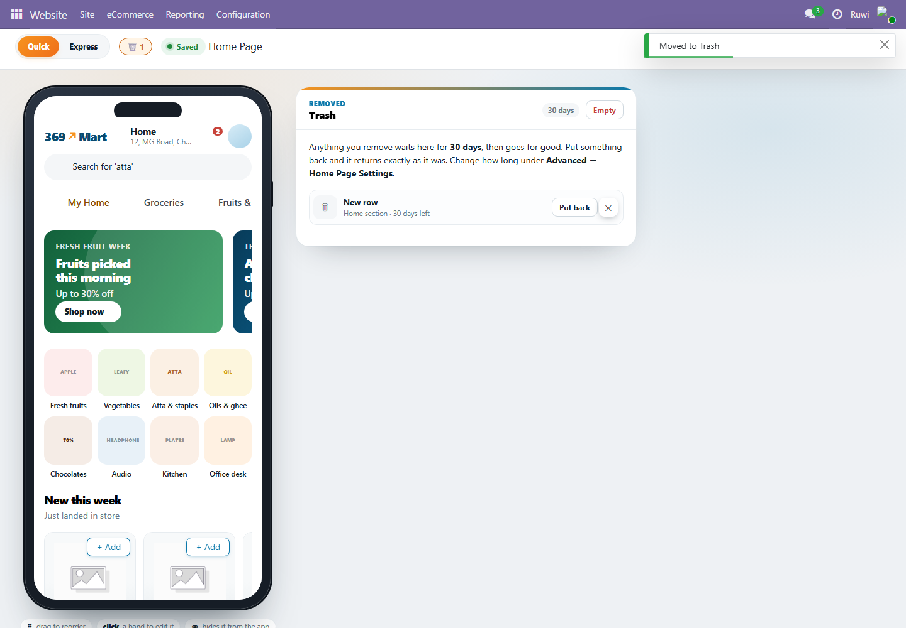

369 Mart Home Page decides what shoppers see first when they open the shop app: the row of tabs across the top, the sliding promo banners, the round category tiles, and the rows of products further down. The app has two sides, Quick (delivery in minutes) and Express (delivery in days), and each side has its own home page.
The whole layout is kept as a saved page. One saved page is the everyday page; another, such as a festival sale, can be given dates and take over on its own, then hand back when its time is up. You edit a page on a picture of the shop itself, and every change saves on its own. Nothing is ever deleted straight away: removed things wait in a Trash first.
| Word | What it means |
|---|---|
| Saved page | A complete home page (both Quick and Express) kept under a name, such as "Everyday" or "Festival sale". |
| Everyday page | The saved page shoppers see when nothing is scheduled. There is always exactly one. |
| Quick / Express | The two sides of the app. The settings screens call them the two app modes; the editor calls the one you are working on This tab. |
| Tabs | The row of small pills across the very top of the app, such as My Home or Offers. |
| Banner / Banner strip | A banner is a promo card that slides past near the top. A banner strip places one or more banners further down, between product rows. |
| Category tile | A rounded picture shortcut under the banners that opens a category. |
| Row | A band of products side by side, with a heading such as "New this week". |
| Hidden / Trash | Hidden means switched off but kept in place. The Trash holds things you removed, for 30 days. |
Part 1 – Setting Up shows where everything lives and covers the settings and starting page you set once. Part 2 – Everyday Use is the work you will repeat: choosing a page, editing it, and switching pages on or scheduling them. Part 3 – Keeping It Secure & In Order covers the Trash, the safety rules on saved pages, and who can do what. Reference tables, tips and a fix-it list follow at the end.
Done once by a Manager or Owner. If your first page already looks right, you can go straight to Part 2.
Open 369 Mart from the main menu. The home page has a front door and a set of plain list screens:
The same Home pages screen is also reachable from Website → Configuration → 369 Mart Home Page, where a website administrator would look for it.
Open Page building → Home Page Settings. It opens the one settings form straight away:
The See what the app receives button opens, in a new browser tab, the exact page data the app is being sent right now.
On install, the module builds a saved page called From your catalogue and switches it on. It takes your biggest categories and turns them into tabs (plus My Home and Offers), up to four banners, up to eight category tiles, and rows: New this week on both sides, Most loved (best sellers) on Express, and a row for each of the biggest categories. Free delivery starts at 499 on Quick and 999 on Express.
A second page, Example - grocery layout (not shown), is also installed, switched off. Keep it as an example to copy from, or remove it.
To start again from your catalogue later, open the page in Page building → Saved Home Pages and press Rebuild from my catalogue. It always makes a new page and switches it on; the old page stays saved, so you can switch back. Your free delivery amounts are carried over.
Every product in a row is drawn as a card. Open a product and look on its General Information page under How this product reads on a card in the app. Everything is optional; left empty, the app uses the product's own name, unit and photo.
When the separate 369 Mart Product Page module is installed, these boxes move into its own product editor instead.
Everything here starts from 369 Mart → Store → Home Page.
Each saved page is a card. The card shows the page name, its note, a coloured status pill (green for the page shoppers see now, blue for one waiting its turn), and what is on it: for Quick and Express, how many banners, tiles, tabs and rows are shown. Each card has these buttons:
| Button | What it does |
|---|---|
| Edit page | Opens the page editor on this page, never another one. |
| Switch on | Makes this the everyday page. Asks first, naming the page shoppers are on now. Not shown on the current everyday page. |
| Schedule | Opens Starts and Ends dates with Save dates and Clear dates (Step 2). |
| Duplicate | Copies the page with everything on it, named "… (copy)". |
| Remove | Moves the page to the Trash. Greyed out on the everyday page. |
At the top, New page asks What is this page for?, takes a name and makes a copy of today's everyday page under it, so you edit something rather than build from nothing. The Trash button opens the list of removed pages.
There are two ways a page reaches shoppers:
Press Edit page. The page is drawn the way a shopper on a computer sees it, inside a browser frame, with a panel on the right. The top shows the page name and its status, with All pages to go back. The toolbar holds:
Click any part of the page to edit it in the panel. Drag the handle on a part to move it within its own group (tabs among tabs, rows among rows). The eye hides a part from the app without deleting it. The panel offers:
| Part | Fields in the panel |
|---|---|
| Tab | Label (the word on the pill) and Icon. If the tab wears a category's logo, the app shows that logo instead; change it in Catalogue → Categories. |
| Banner | Kicker (the small line above), Headline, Note (one line under it), Colour (Green, Navy, Brown, Orange, Teal, Indigo) and Link (where tapping it goes). |
| Category tile | Label (under the picture) and Link (the category it opens). |
| Row | Title, Subtitle and See all link. Leave the link empty and no "View all" is shown. |
Each panel has a Shown / Hidden switch and a Remove button. With nothing selected, the panel edits This tab itself: Shown as (the side's name, e.g. Quick), Promise (the line shown when a shopper switches to it), Icon, and Free delivery above (0 for no free-delivery nudge).
A new row starts as Chosen automatically, Newest first, showing up to 12 products. To change where its products come from, open More settings, click the row, and pick Products from:
| Products from | What the row shows |
|---|---|
| A product category | Published products in the Category you pick. Include sub-categories (on by default) adds the categories under it. Keeps itself up to date. |
| Products I pick myself | Exactly the products you add with Add a product, in your order. Drag to rearrange. |
| Chosen automatically | A Rule: Newest first, Best sellers (counted from orders over Count sales from the last (days), 365 by default, topped up with the newest), or Biggest discount. |
| A product tag | Published products carrying the Tag you pick. |
Show at most caps the number of products (12 by default). The panel tells you the result: "Will show N products in the app."
For a hand-picked row, click a product's pencil to change its wording for this row only: Show as, Size, Badge, Small note, and on Express, Delivery. The product itself is not changed.

More settings shows the same page as a phone. It reaches what the editor leaves out. Tap a band to edit it on the right; drag the handle to move a band; the eye hides it. Below the rows, + Product row and + Banner strip add new bands.

In the app, shoppers see the tabs across the top, the banners sliding past, the tiles under them, then each row in your order, with any banner strips between rows. Hidden parts, parts in the Trash and empty rows are simply not there. Tabs and tiles linked to a category can show that category's logo instead of an icon or drawing.


Removing a banner, tile, tab, row or a whole saved page puts it in the Trash instead of destroying it. It leaves the app at once, but waits 30 days before it is deleted for good. A scheduled job empties anything older each day.

Two rules stop the app from ever being left without a home page:
A page in the Trash is never shown to shoppers, even if its dates are open.
The lists under Page building show what is not in the Trash by default. Use the filters In the Trash, Not in the Trash and Hidden, or group by App mode. A form for something in the Trash shows a yellow notice and a Put back button. A hidden banner, tile or row carries a red Hidden ribbon and a Turn on (show in the app) button.
| Role | What they can do |
|---|---|
| Packer, Accountant, Rider (Internal user) | Look only. Any change they try is refused. |
| Manager (Website designer) | Everything in this manual: add, edit, hide, remove and put back parts; create, switch on, schedule and remove pages; change Home Page Settings. |
| Owner (Administrator (Settings)) | Everything a Manager can, with full administrator rights over the backend. |
The staff console's home page screens follow the same rule: only people with Website designer rights (Managers and Owners) may open them.
The shop app reads the home page without anyone signing in, so everything shown on it is public. Never put internal notes in a headline, banner line or row title. A saved page's Note is for staff only and is not sent to the app.
| State | Meaning (the note beside it) | How to change it |
|---|---|---|
| Live now | Shoppers see this page: "the everyday page", or "scheduled until …" when a window is open. | Switch another page on, or clear the dates. |
| Scheduled | Its window has not started yet: "starts …". | Schedule → change or clear the dates. |
| Ended | Its window has passed: "finished …". | Give it new dates, or remove it. |
| Off | Saved, not in use: "saved, not in use". The everyday page also reads Off while a scheduled page is running. | Switch on, or Schedule. |
| State | Meaning | How to change it |
|---|---|---|
| Shown | In the app (a row needs at least one product; a strip needs at least one shown banner). | The eye, or the Shown / Hidden switch. |
| Hidden | Kept in place, out of the app. Greyed with a Hidden tag under Show hidden. | Turn it back on with the eye. |
| In the Trash | Out of the app and off the page; deleted for good after 30 days. | Put back from the Trash. |
| What you see | What to do |
|---|---|
| An edit is not in the app yet | The app may reuse its last copy for up to Remember for (seconds) (Home Page Settings). Wait, or set it to 0 while editing. Also check the page you edited is the one Live now. |
| A row is missing from the app | It has no products to show. In More settings, check Products from, the category or tag, and that products are published. Hide sold-out products may be removing them. |
| A banner strip is missing | Every banner in it is hidden or in the Trash. Turn a banner on, or add another to the strip. |
| Remove is greyed out on a page | It is the everyday page. Switch another page on first. |
| Shoppers still see the festival page | Its window is still open. Open its card, press Schedule, then Clear dates or change Ends. |
| The save chip says Not saved | The change did not reach the shop. Check the connection and make the change again. |
| "That order did not save." | A drag was not stored, and the part sprang back. Drag it again. |
| "We could not reach the shop." | The screen could not load. Press Try again. |
| A tab or tile shows a logo I can't change here | It wears its category's logo or colours. Change them in Catalogue → Categories, or upload a picture for the tile in More settings. |
| Something I removed is gone from the Trash | It was over 30 days old and the daily clean-up deleted it. It cannot be put back. |